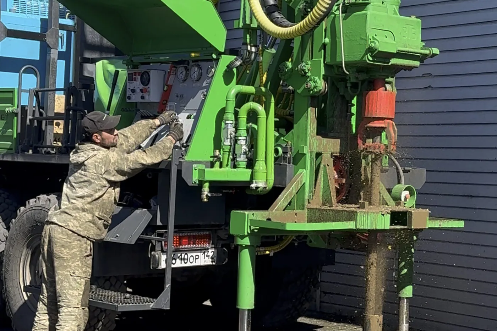

Бурение под ключ: что входит и что обычно не входит
«Под ключ» у каждого подрядчика означает свой список работ. Что обязано входить в бурение скважины, что выносят в допы и что спросить до подписания договора.
«Бурение скважины на воду под ключ» — фраза, которая встречается почти в каждом объявлении и звучит как гарантия: приехали, сделали всё, уехали, ничего доделывать не надо. На практике за одинаковыми словами у разных подрядчиков стоят разные списки работ, и разница обнаруживается не на этапе звонка, а тогда, когда пора платить за то, что в смету не попало. Сверить рекламную формулировку с фактическим составом работ — не паранойя, а единственный способ сравнивать предложения по существу.
Восемь работ, без которых бурения «под ключ» не бывает

Бурение скважины на воду как технологическая услуга — это не одна операция, а последовательность работ, ни одну из которых нельзя пропустить, не поставив под сомнение результат целиком. Вот полный состав, который должен входить в понятие «под ключ» у любого добросовестного подрядчика:
- Выезд инженера и обследование участка. Оценка подъезда для техники, ориентировочной геологии и условий работ — до подписания договора и до того, как названа хоть какая-то сумма.
- Определение места бурения. Конкретная точка на участке с учётом рельефа, подъезда техники и будущих норм расположения скважины.
- Бурение с контролем геологического разреза. Собственно проходка, во время которой фиксируется, какие породы и водоносные горизонты пройдены — это тот самый протокол, который потом ложится в паспорт скважины.
- Монтаж обсадной колонны. Труба, которая держит стенки ствола и не даёт скважине обрушиться или заилиться породой сверху.
- Установка фильтровой части. Узел, через который вода поступает в скважину, отфильтровывая крупную породу.
- Прокачка до чистой воды. Финальная промывка и разглинизация ствола после бурения — без неё скважина сдаётся «не готовой», даже если формально пробурена.
- Замер дебита скважины. Опробование откачкой — фактический объём воды, который скважина способна отдавать, а не оценка «на глаз».
- Паспорт скважины и акт. Итоговый документ с зафиксированной конструкцией, глубиной и дебитом плюс акт выполненных работ.
Это не произвольный список, а логическая цепочка: каждый следующий пункт технически опирается на предыдущий, и убрать любой из середины — значит либо не довести скважину до рабочего состояния, либо оставить заказчика без подтверждения того, что он на самом деле получил. Именно этот набор работ и формирует ставку за метр бурения — из чего конкретно она складывается и какие факторы двигают итоговую сумму, разобрано отдельно: из чего складывается цена скважины.
Где заканчивается «под ключ» и начинается «голое бурение»
У формулировки «под ключ» есть тихий антипод — предложения, где ценник ниже именно потому, что часть перечисленных выше пунктов из состава работ выпала. Самые частые места экономии — это конец списка, а не начало: прокачку сокращают до символической, дебит не замеряют вовсе, паспорт не оформляют или оформляют формально, без реальных цифр опробования. Внешне разница незаметна сразу: вода из крана идёт что при полной прокачке, что при сокращённой. Разница проявляется позже — в стабильности дебита, в том, есть ли на руках документ, которым можно подтвердить параметры скважины перед продажей участка или перед подключением дополнительного оборудования.
Формально это уже не «под ключ», а именно бурение как таковое, минимальный набор операций для получения ствола с водой. Называть это тем же словом, что и полный цикл с прокачкой, замером и паспортом, — вопрос добросовестности конкретного подрядчика, а не общепринятого стандарта: жёсткого регламента, что обязано входить в термин «под ключ», в открытых источниках нет. Поэтому единственный надёжный способ не купить «голое бурение» по цене полного цикла — сверить список работ в договоре с перечнем выше пункт за пунктом, а не полагаться на само слово в объявлении.
На практике разница между двумя вариантами редко видна в момент сдачи объекта — вода из крана идёт в обоих случаях, и заказчику, который не разбирается в теме, нечем на месте отличить полноценную прокачку от сокращённой, а честный замер дебита от цифры «на глаз». Разница проявляется в документе, который остаётся на руках: если в паспорте вместо конкретной цифры дебита стоит прочерк или формулировка «дебит достаточный», это повод переспросить, проводилось ли опробование откачкой вообще — или паспорт заполнен по шаблону без реальных замеров на конкретной скважине.
Что не входит в «под ключ» и почему это нормально
Отдельная категория — то, что действительно не входит в бурение под ключ ни у одного подрядчика, потому что относится к другому этапу работ, а не потому, что его «сэкономили». Это обустройство: кессон или адаптер для защиты оголовка, насосное оборудование, гидроаккумулятор и автоматика, разводка водоснабжения по дому, лабораторный анализ воды. Всё перечисленное требует другого оборудования, других специалистов и монтируется уже после того, как скважина готова и опробована, — включать это в стоимость метра бурения было бы так же странно, как включать в цену фундамента дома стоимость крыши.
Разница между «не входит, потому что это другой этап» и «не входит, потому что вырезали из списка бурения» принципиальна для сравнения предложений: первое — нормальная отраслевая практика у всех подрядчиков, второе — повод переспросить, что именно скрывается за низкой ценой. Подробный разбор того, что входит в обустройство и сколько оно добавляет отдельным блоком к бюджету, — в статье что входит в обустройство скважины.
Документы, которые остаются на руках после сдачи объекта
Итог работ по договору «под ключ» — не только сама физическая скважина, но и пакет документов: договор с зафиксированными условиями, акт выполненных работ, паспорт скважины с конструкцией, глубиной и замеренным дебитом. Это не формальность для галочки, а то, чем можно подтвердить параметры скважины впоследствии — при продаже участка, при подключении насосного оборудования, при обращении к другому подрядчику за обслуживанием, если первый окажется недоступен. Что именно должен фиксировать этот пакет документов и когда стоит задуматься об их отсутствии, если скважина уже есть, а бумаг нет, — разобрано отдельно: нужно ли узаконивать скважину.
Что спросить до подписания
Прежде чем подписывать договор на бурение «под ключ», имеет смысл сверить предложение с составом работ по этому списку и задать несколько прямых вопросов: входит ли прокачка до чистой воды и сколько по времени она занимает по факту, а не по договору на бумаге; проводится ли замер дебита и попадёт ли цифра в паспорт; выдаётся ли сам паспорт со всеми параметрами или только акт о выполнении работ; что именно понимается под «обустройством» в этом конкретном предложении и входит ли оно в цену или идёт отдельной строкой. Ответы на эти вопросы показывают состав предложения куда точнее, чем сравнение итоговых цифр в двух разных сметах: этапы бурения технологически по порядку, от выезда инженера до сдачи объекта, разобраны подробно в отдельной статье — как проходит бурение скважины. А что должна включать гарантия на уже выполненные работы, если после сдачи объекта что-то пойдёт не так, — отдельная тема: что должна включать гарантия на скважину. Сравнить состав конкретного предложения с этим списком можно на выезде инженера при заказе бурения.